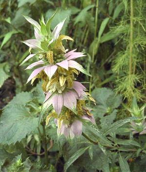

Previous || Next || Return to Mystery Plants || USC Herbarium
This Week's Mystery Plant | Dr. John B. Nelson Curator, USC Herbarium |
|
One of the nicest things about our Riverbanks Botanical Garden is the assortment of wild habitats present around the formal gardens. These wild settings, which are perfect for field trips for our botany courses, are dominated by steep hardwood forests, but there are plenty of places where you can find plants more accustomed to open, rocky places. Like this one. (Speaking of Riverbanks, it turns out that an inventory project of their plant collections will begin this fall, through our herbarium. This is being made possible through a very generous grant provided to us by the Midlands Master Gardeners Association. For information on their many programs and activities, call 803-865-1216.) Our Mystery Plant is a native member of the mint family, and it is somewhat woody, especially toward the base. Of course, the leaves are opposite, like everything in the mint family. Its foliage is characterized by a strong, musky sort of sweetness. (It's a very characteristic scent, and to me doesn't smell like anything else. Definitely not "mint".) The flowers are borne in a series of compact, rounded heads situated at the top of the flowering stem. At the base of each of these heads, there are a number of very conspicuous pinkish bracts, and these are heavily dotted with tiny yellow glands. The flowers themselves are showy and creamy yellow: the corolla is tubular, with a very dramatic upper lip, this arching over the lower lip. Inside the corolla tube will be two long stamens. The slender style, which is forked at its tip, can be found in there, too. All sorts of insects love the flowers…bees, butterflies, and wasps are frequent visitors. This species is widespread in eastern North America, from the Atlantic coast well into the prairie states. In South Carolina, it may be expected in every county, but is most frequent in the coastal plain or sandhills, usually on sandy or rocky soil. |
 Photo by Linda Lee |